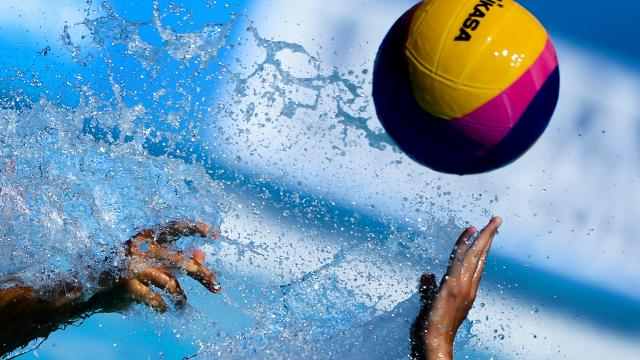

Waterpoloteam AZC Moscow in Champions League
Het Alphense heren waterpoloteam AZC Moscow speelt de komende twee jaar op Europees niveau tegen zestien topteams. De Alphenaren hebben hiervoor een wildcard ontvangen. Hoofdtrainer Ron van der Wild laat weten super trots te zijn.
De thuiswedstrijden worden gehouden in zwembad AquaRijn. In dit zwembad worden tussen 25 oktober en 9 mei de thuiswedstrijden uit de poule van acht ploegen gespeeld. Vanaf de tribunes van AquaRijn is er vanaf drie zijden een goed overzicht over de wedstrijden. Naast de wedstrijden worden ook nevenactiviteiten op het gebied van waterpolo georganiseerd.
Na een internationaal mindere periode lijkt het Nederlandse waterpolo de internationale aansluiting te hebben hervonden. AZC Moscow speelt overigens al jaren mee in de Nederlandse top: Afgelopen seizoen werd op het nippertje het landskampioenschap gemist. Ook in het verleden behaalden de Alphenaren veel successen.
Andere clubs
Andere clubs die een uitnodiging voor de Champions League hebben ontvangen, zijn: Olympiakos Griekenland, Partizan Belgrado Servië, Jug Dubrovnik Kroatië, Szolnok Hongarije, Oredea Roemenië, Spandau Berlijn Duitsland, Dynamo Moskou Rusland, Pro Recco Genua Italië, Nice Frankrijk en Barceloneta Spanje.
Uit drie voorrondes worden hier nog vier clubs aan toegevoegd. Ook de organisator van de uiteindelijke finale, Waspo Hannover, doet mee.
Volgend nieuws bericht